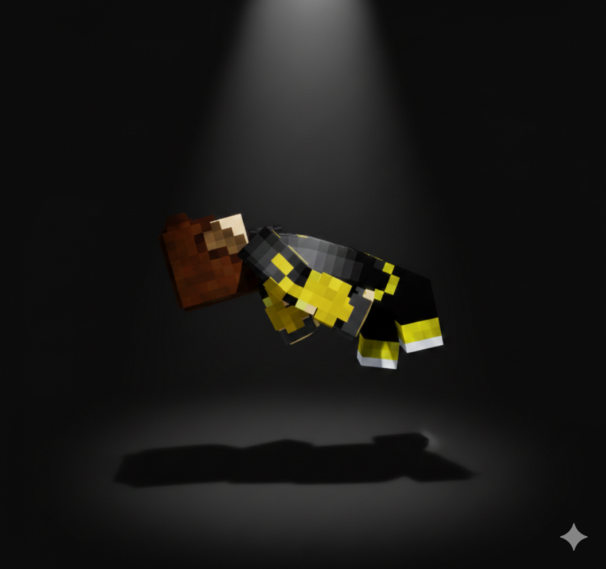

Enable notifications for updates and new Entries/notes from Helixo
Enable
Welcome to the Inner Circle
A place where helixo update his closest friends in life and stuff.
Helixo's Latest Entry

Helixo
Welcome to the Inner Circle!
Rant 🗣️
read more.. 67
Read whole entry
Information Hub
Helixo heart codes
Emoji meanings
Show me
General Info
Helixo's whatever
Show me
✕